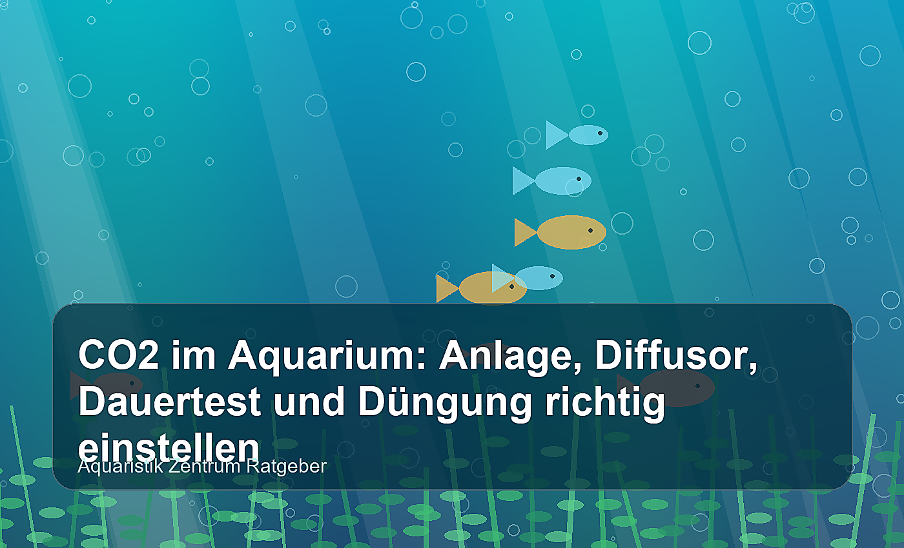

Warum CO2 im Aquarium so wichtig ist
CO2 ist kein Wundermittel, aber einer der wichtigsten Bausteine für ein gut bepflanztes Aquarium. Pflanzen bauen aus Licht, Wasser, Nährstoffen und Kohlendioxid neue Blattmasse auf. Fehlt CO2, geraten selbst robuste Arten ins Stocken: Blätter bleiben klein, Stängelpflanzen verkahlen im unteren Bereich und Algen nutzen die Lücke. Besonders in Aquascapes, stark beleuchteten Becken und dicht bepflanzten Gesellschaftsaquarien ist eine kontrollierte CO2-Zugabe deshalb oft der Unterschied zwischen „wächst irgendwie“ und „wächst sichtbar gesund“.
Wichtig ist jedoch die Balance. Mehr CO2 allein löst keine Probleme, wenn Licht viel zu stark eingestellt ist oder Nitrat, Phosphat, Kalium, Eisen und Spurenelemente fehlen. Umgekehrt bringt die beste Düngung wenig, wenn die Pflanzen wegen CO2-Mangel nicht in die Photosynthese kommen. Dieser Ratgeber zeigt dir, wie du CO2-Anlage, Diffusor, Dauertest und Düngung praxisnah aufeinander abstimmst.
CO2-Anlage: Bio-CO2 oder Druckgas?
Für kleine, wenig anspruchsvolle Aquarien kann Bio-CO2 ein günstiger Einstieg sein. Dabei entsteht Kohlendioxid durch Gärung, meist aus Zucker, Wasser und Hefe oder fertigen Gel-Systemen. Der Nachteil: Die Produktion schwankt, lässt sich kaum exakt regeln und sinkt mit der Zeit. Für Nano-Becken mit moderatem Licht kann das reichen, für größere Aquarien oder anspruchsvolle Pflanzen ist Bio-CO2 oft zu unpräzise.
Eine Druckgas-CO2-Anlage arbeitet mit einer wiederbefüllbaren oder Einweg-Flasche, Druckminderer, Feinnadelventil, Blasenzähler, Rückschlagventil und Diffusor oder Reaktor. Sie ist teurer in der Anschaffung, dafür deutlich stabiler und sicherer zu dosieren. Wer dauerhaft ein bepflanztes Aquarium pflegen möchte, fährt mit Druckgas meistens besser. Achte auf einen fein einstellbaren Druckminderer, solide Verschraubungen und passende Flaschengröße. Für 60 bis 120 Liter sind 500 g bis 2 kg Flaschen beliebt; große Becken profitieren von 2 kg oder mehr, weil die Flasche seltener leer wird.
🛒 CO2-Anlagen für bepflanzte Aquarien
Eine regelbare Druckgas-Anlage mit Druckminderer, Blasenzähler, Rückschlagventil und Diffusor macht die CO2-Zugabe deutlich konstanter als einfache Gärsysteme.
👉 CO2-Anlagen bei Amazon ansehenDie richtige CO2-Menge: Zielwert und Startdosierung
Als grober Zielbereich gelten in bepflanzten Aquarien etwa 20 bis 30 mg/l CO2. Dieser Wert ist für die meisten Pflanzen ausreichend und für viele Fische und Garnelen gut verträglich, wenn Sauerstoffversorgung und Oberflächenbewegung stimmen. Starte niemals sofort mit hoher Dosierung. Beginne niedrig, beobachte Tiere und Dauertest und erhöhe über mehrere Tage in kleinen Schritten.
Die oft zitierte „Blasen pro Sekunde“-Regel ist nur ein Startpunkt, kein Messwert. Blasengröße, Diffusor, Beckengröße, Wasserbewegung und Pflanzenmasse verändern den Bedarf stark. Für ein 60-Liter-Becken kann eine Blase pro Sekunde schon viel sein, während ein stark bepflanztes 240-Liter-Becken deutlich mehr benötigen kann. Entscheidend ist, ob der Dauertest im Tagesverlauf passend reagiert und ob Fische ruhig atmen.
Regel Nummer eins: CO2 immer nach den Tieren einstellen, nicht nach einer Tabelle. Schnelles Atmen, Oberflächenstehen oder hektisches Verhalten sind Warnsignale – dann sofort CO2 reduzieren, belüften und die Oberfläche stärker bewegen.
Diffusor, Inline-Diffusor oder Reaktor?
Der Diffusor löst CO2 in möglichst feinen Bläschen im Wasser. Klassische Glas- oder Edelstahl-Diffusoren sitzen im Aquarium und sind günstig, sichtbar und leicht zu kontrollieren. Sie funktionieren gut, wenn die Strömung die Bläschen im Becken verteilt. Platziere den Diffusor möglichst tief und dort, wo die Filterströmung die Blasen erfasst. So haben sie lange Kontaktzeit und werden nicht direkt an der Oberfläche ausgetrieben.
Inline-Diffusoren werden in den Schlauch eines Außenfilters gesetzt. Sie halten die Technik aus dem Aquarium heraus und verteilen CO2 oft sehr fein über den Filterauslass. Dafür benötigen sie genug Arbeitsdruck und müssen zum Schlauchdurchmesser passen. CO2-Reaktoren lösen das Gas besonders effizient, sind aber größer und eher für größere Becken sinnvoll. Für die meisten Aquarien ist ein guter Keramikdiffusor oder Inline-Diffusor die beste Kombination aus Preis, Wirkung und Wartung.
Reinige Diffusoren regelmäßig. Wenn die Keramikscheibe veralgt oder verkalkt, werden die Blasen gröber und die Anlage muss stärker arbeiten. Ein Bad in geeigneter Reinigungslösung, gründliches Spülen und vollständiges Entchloren vor dem Wiedereinsetzen sind wichtig, damit keine Rückstände ins Aquarium gelangen.
Dauertest korrekt einsetzen und ablesen
Ein CO2-Dauertest ist ein kleiner Glas- oder Kunststoffbehälter mit Indikatorflüssigkeit, der über eine Luftbrücke mit dem Aquarienwasser in Kontakt steht. Verwende am besten eine fertige 20- oder 30-mg/l-Indikatorlösung. Aquariumwasser plus pH-Reagenz ist ungenauer, weil Karbonathärte und andere Säuren das Ergebnis verfälschen können. Bei richtiger Lösung bedeutet Blau meist zu wenig CO2, Grün ungefähr passend und Gelb zu viel.
Der Dauertest reagiert verzögert, oft um ein bis zwei Stunden. Deshalb sollte er nicht direkt neben dem Diffusor hängen, sondern auf der gegenüberliegenden Beckenseite in mittlerer Höhe. So zeigt er eher, ob CO2 wirklich im Aquarium ankommt. Stelle die CO2-Zufuhr so ein, dass der Test kurz vor oder während der Hauptbeleuchtungszeit hellgrün ist, ohne ins Gelbe zu kippen.
Timing: Wann CO2 einschalten und ausschalten?
Pflanzen verbrauchen CO2 nur bei Licht. Nachts atmen Pflanzen, Fische und Bakterien Sauerstoff und geben CO2 ab. Deshalb ist eine Nachtabschaltung mit Magnetventil sinnvoll. Sie spart Gas und reduziert das Risiko zu hoher CO2-Werte am Morgen. Bewährt hat sich: CO2 etwa ein bis zwei Stunden vor Lichtbeginn einschalten und etwa eine Stunde vor Lichtende ausschalten. So ist zum Start der Beleuchtung bereits genug CO2 vorhanden, während abends kein unnötiges Gas eingetragen wird.
Bei sehr weichem Wasser oder empfindlichem Besatz solltest du besonders behutsam vorgehen, weil pH-Schwankungen stärker ausfallen können. Eine leichte Oberflächenbewegung ist kein CO2-Feind, sondern wichtig für Sauerstoff und Gasaustausch. Vermeide nur starkes Plätschern oder Sprudelsteine während der CO2-Phase, wenn dadurch viel CO2 ausgetrieben wird.
CO2 und Düngung: Das Liebig-Prinzip im Aquarium
Pflanzenwachstum wird vom knappsten Faktor begrenzt. Ist CO2 stabil, steigen Licht- und Nährstoffbedarf. Dann brauchst du eine durchdachte Düngung. Makronährstoffe sind vor allem Nitrat (NO3), Phosphat (PO4) und Kalium (K). Mikronährstoffe umfassen Eisen, Mangan und weitere Spurenelemente. Ein gut bepflanztes Aquarium läuft häufig stabil mit etwa 10 bis 25 mg/l Nitrat, 0,1 bis 1 mg/l Phosphat, 5 bis 15 mg/l Kalium und einem schwach nachweisbaren Eisenwert. Das sind Richtbereiche, keine Pflichtwerte.
Wichtiger als perfekte Zahlen ist Konstanz. Dünge lieber regelmäßig und moderat als selten große Mengen. Nach dem wöchentlichen Wasserwechsel kannst du Makro- und Mikrodünger auf Zielwert bringen und dann täglich oder alle zwei Tage nachdosieren. Bei Soil-Böden, vielen schnell wachsenden Pflanzen oder sehr starkem Licht kann der Verbrauch hoch sein. Bei langsam wachsenden Aufsitzerpflanzen wie Anubias und Javafarn genügt oft weniger.
🛒 Dauertest, Diffusor und Pflanzendünger
Für eine stabile CO2-Versorgung brauchst du neben der Anlage auch einen zuverlässigen Dauertest, passende Indikatorflüssigkeit und abgestimmte Makro- und Mikrodünger.
👉 Zubehör und Dünger bei Amazon entdeckenLicht richtig anpassen
Viele CO2-Probleme sind eigentlich Lichtprobleme. Je stärker und länger die Beleuchtung läuft, desto mehr CO2 und Nährstoffe brauchen die Pflanzen. Wenn du CO2 neu installierst oder Algenprobleme hast, starte mit sechs bis sieben Stunden Beleuchtungsdauer und mittlerer Intensität. Erhöhe erst, wenn Pflanzen sichtbar gesund wachsen und keine neuen Algenbeläge entstehen. Acht bis neun Stunden sind für viele Aquarien ausreichend; zehn Stunden und mehr sind nur sinnvoll, wenn Versorgung und Pflanzenmasse dazu passen.
Ein häufiger Fehler ist ein starkes LED-Licht über einem frisch eingerichteten Becken mit wenigen Pflanzen. Dann entstehen Nährstoff- und CO2-Lücken, bevor die Pflanzen überhaupt richtig eingewurzelt sind. Setze von Anfang an viele schnell wachsende Pflanzen ein, reduziere die Beleuchtung in der Einfahrphase und erhöhe die Leistung später langsam.
Typische Fehler beim Einstellen
- CO2 zu spät eingeschaltet: Wenn CO2 erst mit dem Licht startet, fehlt es den Pflanzen in den wichtigsten ersten Stunden.
- Dauertest falsch platziert: Direkt neben dem Diffusor wird zu viel angezeigt, in einer strömungsarmen Ecke zu wenig.
- Zu wenig Strömung: CO2 und Dünger erreichen nicht alle Pflanzen, obwohl genug dosiert wird.
- Nur Eisen gedüngt: Ohne Nitrat, Phosphat und Kalium können Pflanzen trotz CO2 stagnieren.
- Zu schnelle Änderungen: Große Sprünge bei CO2, Licht oder Dünger stressen Tiere und destabilisieren das Becken.
Schritt-für-Schritt: CO2 sicher einstellen
- Diffusor tief im Aquarium und in der Strömung platzieren.
- Dauertest mit fertiger Indikatorlösung gegenüber vom Diffusor anbringen.
- CO2 zwei Stunden vor Lichtbeginn starten und eine Stunde vor Lichtende abschalten.
- Mit niedriger Blasenzahl beginnen und täglich leicht erhöhen, bis der Dauertest hellgrün wird.
- Fische und Garnelen genau beobachten; bei Stress sofort reduzieren und belüften.
- Licht zunächst moderat halten und Düngung regelmäßig auf Pflanzenmasse abstimmen.
- Nach jeder Änderung mindestens ein bis zwei Tage warten, bevor du weiter nachjustierst.
Algen trotz CO2: Was tun?
Algen bedeuten nicht automatisch, dass zu wenig CO2 vorhanden ist. Häufig sind schwankende Werte das Problem: morgens zu niedrig, mittags passend, abends zu hoch oder an manchen Tagen ganz anders. Prüfe zuerst Technik, Zeitschaltuhr, Flaschendruck, Rückschlagventil und Diffusor. Danach kontrolliere Lichtdauer, Pflanzenmasse und Nährstoffversorgung. Punktalgen deuten oft auf ein Ungleichgewicht bei Phosphat und Licht hin, Fadenalgen auf Instabilität in jungen Becken, Pinselalgen häufig auf CO2- und Strömungsprobleme.
Bekämpfe nicht nur die sichtbaren Algen. Entferne befallene Blätter, mache regelmäßige Wasserwechsel, stabilisiere CO2 und dünge nachvollziehbar. Ein Notizbuch oder eine einfache Tabelle hilft enorm: Datum, Wasserwechsel, Dünger, CO2-Einstellung, Dauertestfarbe und Beobachtungen. Nach zwei bis drei Wochen erkennst du Muster viel besser.
Besatz und Sicherheit
CO2 verdrängt keinen Sauerstoff im direkten Sinn, aber zu viel CO2 erschwert Fischen die Atmung. Besonders nachts und morgens kann Sauerstoff knapp werden, wenn viele Tiere, starke Bakterienaktivität oder wenig Oberflächenbewegung zusammenkommen. Sorge deshalb für sauberen Filter, ausreichende Strömung und nicht zu hohe Temperaturen. Warmes Wasser enthält weniger Sauerstoff. Garnelen reagieren oft sensibel auf abrupte Änderungen; erhöhe CO2 bei Garnelenbecken besonders langsam.
Technisch wichtig sind ein Rückschlagventil gegen zurücklaufendes Wasser, dichte Schläuche, sichere Flaschenbefestigung und regelmäßige Kontrolle aller Verbindungen. CO2-Flaschen stehen unter Druck und sollten nicht lose im Unterschrank herumrollen. Bei Druckgas gilt: ordentlich montieren, langsam öffnen und nie an beschädigten Druckminderern experimentieren.
Fazit: Stabilität schlägt Maximalwerte
Ein gut eingestelltes CO2-System macht die Aquarienpflege nicht komplizierter, sondern berechenbarer. Wähle eine passende Anlage, verteile das Gas fein und gleichmäßig, kontrolliere mit einem korrekt platzierten Dauertest und stimme Licht sowie Düngung auf die Pflanzenmasse ab. Der beste Zielwert ist nicht die höchste CO2-Zahl, sondern ein stabil hellgrüner Bereich, bei dem Pflanzen wachsen und Tiere entspannt bleiben.
Wenn du langsam vorgehst, Änderungen dokumentierst und jedes Aquarium als eigenes System betrachtest, wirst du schnell ein Gefühl für die richtige Balance entwickeln. Dann zeigt sich der eigentliche Vorteil von CO2: kräftige Triebe, gesunde Blattfarben, dichter Wuchs und ein Becken, das deutlich weniger anfällig für Algen wird.
Hinweis: Beobachte deinen Besatz immer individuell. Bei auffälligem Verhalten hat die Sicherheit der Tiere Vorrang vor jedem Pflanzenziel.